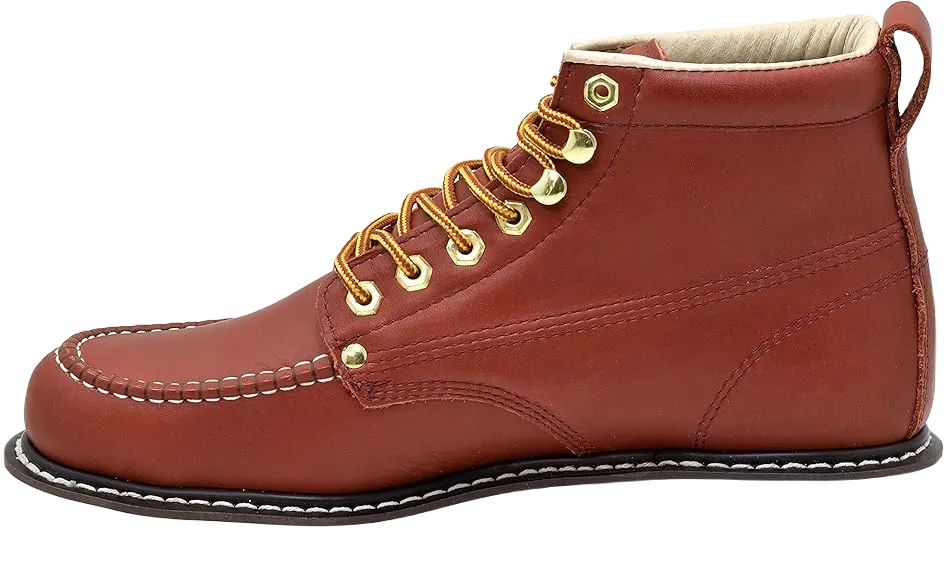
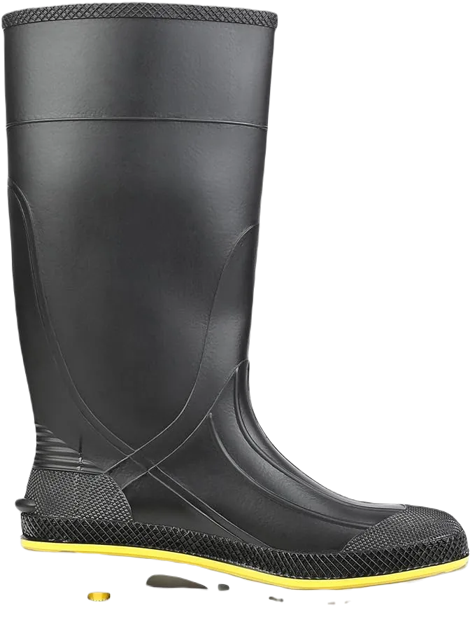

8 Best Work Shoes For Painters in 2024
A painter needs shoes that not only provide foot protection but are also easy to clean and offer good traction on smooth surfaces. To minimize tension, the shoes should help distribute weight and provide arch support. Comfort is crucial, as painters often spend long hours standing on concrete.
Additionally, the shoes should be versatile enough for climbing stairs. Choosing the right shoes for painting is essential, as the comfort of a painter's feet directly impacts the quality of their work and overall success. Even part-time painters emphasize the importance of selecting the appropriate footwear, regardless of experience level.
-
#1
Golden Fox painter’s shoes
The Golden Fox shoe is a popular choice among hunters and farmers, thanks to its easy-to-clean sole. These shoes are designed to withstand electrical shocks, making them suitable for painters working in light-hazardous areas. For painters using electrical tools like airbrushes, the Golden Fox Painter Hughes model provides excellent protection by absorbing electric shocks effectively.
Designed with a composite toe, these shoes offer added safety from falling objects, ensuring that painters’ feet are well-protected. The quality Ortholite insoles enhance comfort, allowing painters to work all day without discomfort.
The Ortholite insoles also help absorb shocks when moving up and down stairs, providing additional support. Made from full-grain leather, the Golden Fox shoes protect your feet from both chemicals and water, making them an ideal choice for painters. -
#2
Painter’s Toe Shoes
Next up is the painter toe boot from a shoe-making company that has spent a decade perfecting its craft for painters. The upper is constructed from 100% leather, providing excellent protection for your feet.
The leather design also safeguards against chemical spills from various paint brands. Additionally, the rubber sole offers exceptional traction, making it easier for painters to work on roofs and elevated surfaces.
It's important to note that the interior of these painter toe boots is softly lined to prevent blisters from friction between the shoes and your feet. Another reason we endorse these boots for painters is their use of oiled full-grain leather, which ensures they are completely resistant to water and paint. This material also protects your ankles from falling objects and paint spills on the job site. The boots feature both straps and lace-ups, ensuring a secure and comfortable fit throughout the day. -
#3
Skechers Energy Afterburn
.webp)
The Sketchers Energy After Burn features a leather upper, which enhances durability and comfort. It includes two cutaways in the upper design, providing better access and flexibility. The rubber sole ensures excellent traction, making it ideal for painters who need reliable grip on various surfaces. This shoe accommodates a comfortable fit for both wide and narrow feet.
Upon closer inspection, you’ll notice that the sole is equipped with airbags, enhancing the shoe's shock-absorption capabilities. The rubber outsole provides outstanding grip, preventing slips while painting, especially on stairs. To ensure comfort during long hours of work, the shoes come with well-padded arch support insoles.
The spacious toe box is designed to give painters ample room, helping to prevent blisters and discomfort. The rubber outsole also offers impressive flexibility, allowing painters to navigate different terrains with ease. If you’re a painter on a budget, the Sketchers Energy After Burn is an excellent choice that combines affordability with quality. -
#4
ROCKROOSTER Painters Shoes
The ROCKROOSTER shoes feature an upper made from premium whole grain leather, blending functionality with durability. This design ensures that painters’ feet are well-protected from pain and chemical spills, as the high-quality leather effectively shields against various hazards.
These shoes offer exceptional versatility, allowing painters to access challenging areas such as rooftops and underground septic tanks with ease. The cushioning system is engineered to absorb shock, providing comfort during long hours of work.
Equipped with steel toe technology, these shoes are completely puncture-resistant, ensuring safety on the job. The breathable mesh lining promotes airflow, keeping feet odor-free. Additionally, the rubber soles provide reliable traction and protect against electrical shocks, while lace-up closures accommodate both wide and narrow feet for a comfortable fit. -
#5
Servus PVC Chemical
For painters who prefer knee-length shoes, it's essential not to overlook the service PVC chemical-resistant shoes. Made entirely from synthetic materials, these PVC shoes protect the painter's feet from water and chemical degradation.
Designed for easy replacement, these shoes feature removable dual-density insoles. They are reinforced at key stress points to ensure durability while maintaining performance in demanding conditions.
With their smooth, waterproof exterior, these PVC shoes facilitate seamless painting, even in harsh weather. They are easy to slip on and off, thanks to their design. The slightly wider tongue also enhances comfort, ensuring that even those with wider feet can enjoy a better fit. -
#6
Timberland PRO Men’s Titan 6
.webp)
The Golden Fox painter's shoes feature a durable rubber alloy that provides exceptional torsion, traction, and resistance to grease, abrasion, and slipping. Their design includes additional skin care to prevent moisture absorption, even when submerged up to four inches.
To keep feet dry, the shoes utilize X-Static silver fiber, which helps regulate body temperature, combats microbial infections, and eliminates odors. The ergonomic PowerFit™ Comfort System ensures maximum comfort throughout the day.
To enhance comfort, these shoes utilize X-Static silver fiber, which not only helps maintain a dry environment but also regulates body temperature. This innovative material combats microbial infections and effectively prevents odors, ensuring that your feet remain fresh throughout long working hours. The ergonomic PowerFit™ Comfort System is specifically designed to provide optimal support and comfort during extended periods of wear. -
#7
Georgia Giant Men’s Romeo Slip
.webp)
For a compelling reason, the Georgia Giant Romeo has become a best-seller. Crafted from soft, durable full-grain leather, these shoes offer a stylish look whether you're at work in the city or enjoying a day out.
The full-grain leather upper ensures longevity, making these shoes resilient over time. They feature convenient nylon bridge loops and stretchable side gore panels for easy wear and flexibility.
With a high-performance lining, your feet stay warm, dry, and comfortable throughout the day. The Goodyear welt construction guarantees quality and durability, while a sturdy steel shank provides essential arch support. -
#8
Danner Vicious Non-Metallic
.webp)
The Danner Vicious Painter shoes are designed with durable rubber soles that provide exceptional traction for painters. Constructed with synthetic uppers, these shoes effectively protect against water and oil spills, keeping your feet safe and dry.
Featuring standard arch support, these shoes ensure that painters can navigate stairs comfortably, whether going up or down. The oil-resistant materials offer excellent moisture protection, making them ideal for various painting environments.
Additionally, the Danner Vicious shoes incorporate electrical protection technology, allowing painters to work safely with modern electrical painting tools while effectively absorbing any shocks. The abrasion-resistant toe cap enhances durability, and the 90-degree heel, with its slightly lower profile, allows for a smooth and stable experience while working at height.